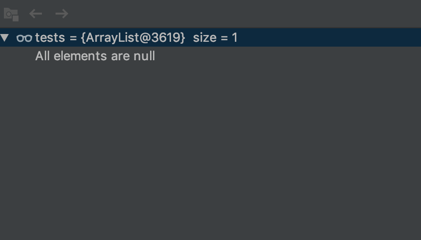

사내 시스템 운영 중, SMS를 전송해 주는 부분에서 장애가 발생 하였다. 어디에선가 NullPointer Exception이 발생하고 있었다. stacktrace기준으로 추적해 보니, Mybatis를 통해 데이터를 조회 한다음 데이터를 가공하는 과정에서 NullPointerException이 발생하고 있었다. 일단 디버깅 이전에 코드를 봤다. 아무리 생각해도 null이 발생하지 않을 것 같았다.
실제 코드를 돌려보았다. 
이 메세지는 무엇? 구글에 검색해 보니 List내의 모든 Element의 reference가 null인 것이었다. 그래서 size는 있지만, 가르키는 instance가 없기 때문에 Nullpointer Exception이 발생하고 있었다.
일단은 조회된 모든 컬럼이 null이면 mybatis에는 null을 리턴해 주는건가? 라는 심증만 가지고 절대 null이 될 수 없는 id 컬럼을 조회컬럼에 추가해 주었다. (쿼리내에 outer join의 여파로 null만 나오는 쿼리였다.) 일단은 id 컬럼을 추가 해주니, 정상적으로 id만 값이 있고 다른 property는 모두 null인 객체가 생성되었다. 일단 이렇게 이슈를 종료하고자 했지만, 너무 찝찝했다
아니 왜? 모든 컬럼이 null이면 왜 객체 생성을 안하지? 우리가 원하는건 null이 아닐텐데… 하물며 이런상황에 앞서 조회된 내용에 대해 null 체크를 할 생각을 하니 끔찍했다.
분명 설정이 있으리라 생각하고 mybatis 사이트를 뒤져보았다. 뒤져보니 요런게 있었다.
returnInstanceForEmptyRow
MyBatis, by default, returns null when all the columns of a returned row are NULL. When this setting is enabled, MyBatis returns an empty instance instead. Note that it is also applied to nested results (i.e. collectioin and association). Since: 3.4.2
한 마디로 mybatis option중에는 returnInstanceForEmptyRow 이란 옵션이 있는데, 모든 컬럼이 null이면 row를 null로 리턴해 준단다. (이런 ㅡㅡ) 근데 설정 옵션이 true이면 null 대신에 모든 값이 null인 인스턴스를 반환해주고 false이면 null을 반환해 준다고 한다. 하지만 default옵션이 false이기 때문에 아무 설정도 안한 회사소스에서는 당연히 null이 리턴되게 된다. 이 옵션은 mybatis 3.4.2부터 지원한다 (회사에서는 mybatis/3.4.2이상 버전을 사용하고 있다.)
/** * returnInstanceForEmptyRow 설정이 false일때, * 모든 컬럼의 데이터가 null인 경우, List내의 항목이 null이 되는 경우 테스트 * @throws Exception */ @Test publicvoidall_element_null_test_returnInstanceForEmptyRow_false()throws Exception {
//모든 항목이 null인 경우, List내의 Element가 null이 되므로 제거 된다 tests.removeIf(Objects::isNull); assertThat(tests).isEmpty(); }
/** * returnInstanceForEmptyRow 설정이 true일때, * 모든 컬럼의 데이터가 null인 경우, 모든 property가 null인 인스턴스가 생성되는지에 대한 테스트 * @throws Exception */ @Test publicvoidall_element_null_test_returnInstanceForEmptyRow_true()throws Exception {